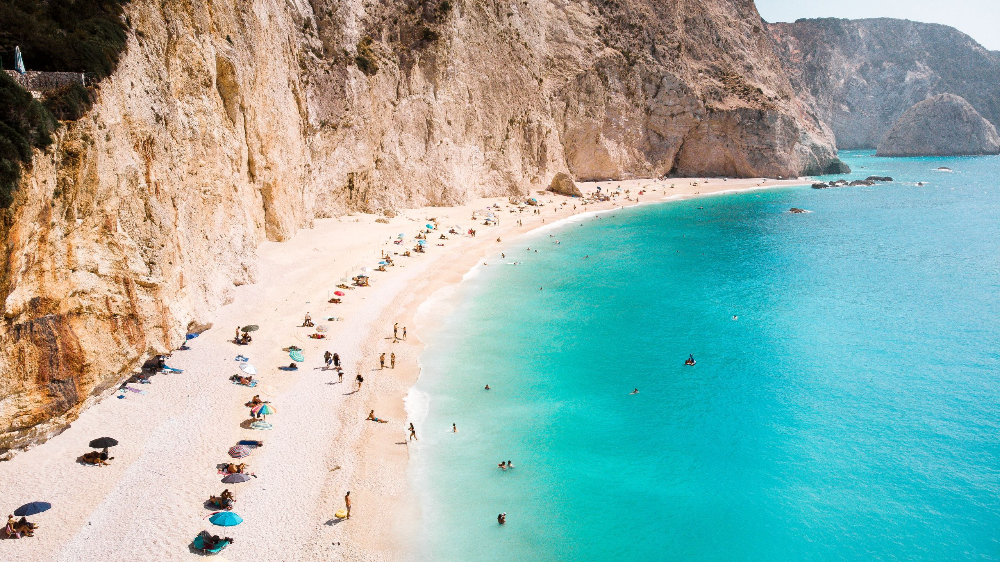
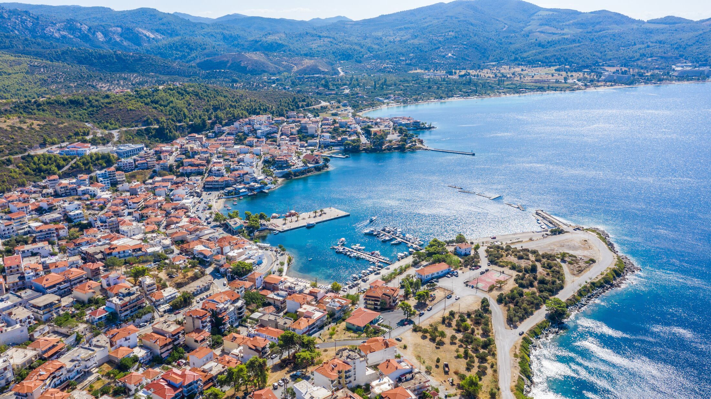
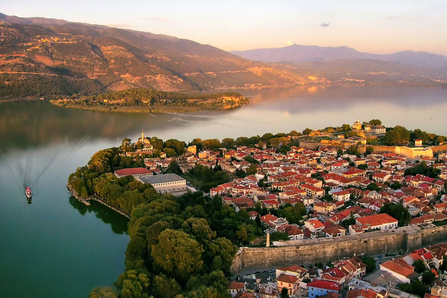

Places to Go

Lefkada
Lefkada is a beautiful island located in the Ionian Sea, off the western coast of Greece. The island is known for its stunning beaches, crystal-clear waters, and picturesque villages. Some of the most popular beaches on the island include Porto Katsiki, Egremni, and Kathisma. Lefkada is my personal favorite place to visit in Greece, and I highly recommend it to anyone looking for a relaxing and beautiful vacation spot.
Click to learn more!

Halkidiki
Halkidiki is a region in northern Greece that is known for its blue flag beaches, local food, and an extremely large resort in Sani Beach. The region is home to three peninsulas, each with its own unique character and attractions. Some of the most popular beaches in the region include Sani Beach, Kallithea Beach, and Vourvourou Beach. Halkidiki is a great place to visit if you are looking for a relaxing beach vacation with plenty of opportunities for outdoor activities.
Click to learn more!

Ioannina
Ioannina is a city in northwestern Greece that is known for its beautiful lake, historic old town, and vibrant cultural scene. The city is home to a number of interesting attractions, including the Ali Pasha Museum, the Byzantine Museum, and the Archaeological Museum. Ioannina is also a great base for exploring the surrounding region, which is home to a number of beautiful villages, monasteries, and natural attractions.
Click to learn more!
Home
Things to Do
Food to Eat
Places to Go
References
Grading